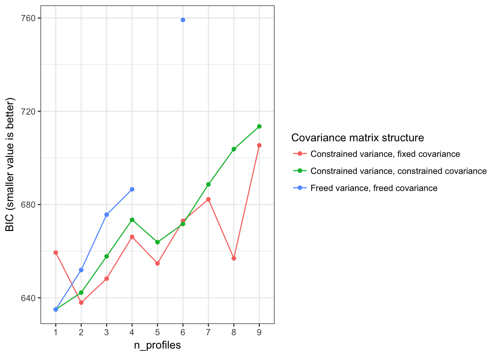
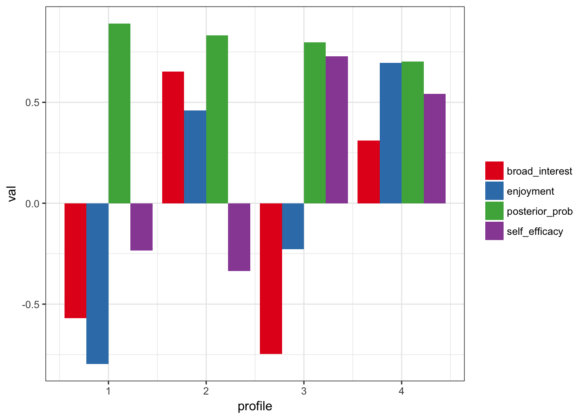

library(tidyLPA)Using the built-in pisaUSA15 dataset (using just 200 observations for illustrative purposes) and variables for broad interest, enjoyment, and self-efficacy, we can quickly explore a number of models - both in terms of the specification of the model and the number of profiles using the Bayesian Information Criteria (BIC) values.
library(dplyr)##
## Attaching package: 'dplyr'## The following objects are masked from 'package:stats':
##
## filter, lag## The following objects are masked from 'package:base':
##
## intersect, setdiff, setequal, uniond <- pisaUSA15
d <- sample_n(pisaUSA15, 100)
compare_models_lpa(d, broad_interest, enjoyment, self_efficacy, statistic = "BIC")
We can explore a three profile solution, with, for example, 4 profiles, and varying means across profiles, but equal variances and covariances (specified with model = 2):
m3 <- create_profiles_lpa(d, broad_interest, enjoyment, self_efficacy, n_profiles = 4, model = 2)## Model with 4 profiles using the 'varying means, equal variances and covariances' model.## AIC is 610.191## BIC is 663.601## ICL is 682.328## Entropy is 0.91543plot_profiles_lpa(m3, to_center = TRUE)
See ?create_profiles_lpa for a description for the models.
We could specify them as follows, whereby model 1 is for a model with varying means across profiles, but equal variances across profiles, and residual covariances fixed to zero, and model 3 is for a model with varying means, variances, and covariances across profiles:
m3i <- create_profiles_lpa(d, broad_interest, enjoyment, self_efficacy, n_profiles = 3, model = 1)## Model with 3 profiles using the 'varying means, equal variances, and residual covariances fixed to zero' model.## AIC is 625.478## BIC is 661.085## ICL is 711.183## Entropy is 0.78626This model has some trouble being fit, so is shown but is not run:
m3ii <- create_profiles_lpa(d, broad_interest, enjoyment, self_efficacy, n_profiles = 3, model = 3)To test profile solutions for a specific model, you can carry out a bootstrapped likelihood-ratio test (presently not run because it can take substantial time):
bootstrap_lrt(d, broad_interest, enjoyment, self_efficacy, model = 1)For use in subsequent analyses, we can extract the posterior probabilities by setting return_posterior_probs to TRUE:
m3 <- create_profiles_lpa(d, broad_interest, enjoyment, self_efficacy, n_profiles = 3, model = 2, return_posterior_probs = TRUE)## Model with 3 profiles using the 'varying means, equal variances and covariances' model.## AIC is 608.386## BIC is 651.622## ICL is 660.138## Entropy is 0.96017m3## # A tibble: 94 x 5
## broad_interest enjoyment self_efficacy profile posterior_prob
## * <dbl> <dbl> <dbl> <dbl> <dbl>
## 1 2.0 2.0 2.000 1 0.99460
## 2 3.0 2.2 2.500 3 0.98820
## 3 2.4 3.0 2.625 3 0.99828
## 4 1.0 2.2 2.625 1 1.00000
## 5 3.0 3.0 1.000 3 0.99904
## 6 3.4 4.0 2.250 2 0.93555
## 7 4.2 2.8 3.000 2 0.99996
## 8 2.6 2.8 1.750 3 0.99177
## 9 4.0 3.0 2.000 2 0.97699
## 10 3.0 2.4 2.000 3 0.99831
## # ... with 84 more rows